Chapter 15 showed five charts from an estimated model, and could not redraw them
\(-0.20 \to -0.35\)GDP after a 1-point rise in the funds rate, in percent: at once, and a year later. Jones (2024) reads about \(-0.2\) and \(-0.33\) off the Smets–Wouters chart.
This deck solves the Smets–Wouters (2007) model in Python and recomputes those charts: same shapes, almost the same numbers. Getting there takes a solver that does not lie, a model file read with care, and the right units.
Four questions, from equations to experiments
I. The model, read with care: what do the 14 equations say, and what does the model file get wrong?
II. Solving and checking: how do we solve it, and how do we know the solution is right?
III. Chapter 15’s figures recomputed: monetary policy, TFP, government purchases, a financial friction
IV. Which frictions matter? switch frictions off one at a time and see what changes
Each block of the model: intuition → equation → its line in the model file → its link to Chapter 15.
Appendix G built the tools; this appendix uses them on the model central banks use
From Appendix G
a model file in YAML: symbols, equations, values
solving = finding decision rules; Blanchard–Kahn
Snowdrop: importModel, run, checkSolution
check every result
New in Appendix H
a research model with 14 equations and 7 shocks
a model file that differs from its paper
a solver that returns a wrong answer
shock units to translate before comparing
Setup: Snowdrop at a fixed version, and the model file that ships with it
# Snowdrop at the commit of 3 October 2026, without its old NumPy/SciPy pins%pip install -q --no-deps "https://github.com/gumilevskij/Framework/archive/47a63b2b780e1876898229c09f7f1e8644462692.tar.gz"%pip install -q --no-deps particles==0.4"ruamel.yaml==0.17.21" ruamel.yaml.clibSUPP = os.path.abspath(os.path.join(os.path.dirname(snowdrop.src.__file__), "..", "..", "supplements"))SW_FILE = os.path.join(SUPP, "models", "COVID19", "sw_model.yaml")shutil.copy(SW_FILE, WORK)
Size: 19421 bytes, 432 lines
The model, read with care
Act I
Smets and Wouters put all of Chapter 15’s pieces into one estimated model
Households
like consumption with habits (they compare it with last quarter’s), dislike work, and set wages that are sticky
Firms
rent capital, choose how hard to run it (utilization), pay to change investment fast (adjustment costs), set sticky prices
Central bank
sets the interest rate with a Taylor rule that looks at inflation and the output gap
Seven shocks
TFP, risk premium, government purchases, investment efficiency, monetary policy, price and wage markups
Estimated on seven U.S. series, 1966–2004, with the Bayesian method of Appendix G.12.
Every variable is a percent deviation from the growth path
\(y_t = 0.5\): GDP is 0.5 percent above its trend in quarter \(t\) (the balanced growth path of Ch. 5)
inflation \(\pi_t\) and the interest rate \(r_t\): percentage points per quarter; × 4 for annual rates
\(E_t x_{t+1}\): what people expect today for next quarter, a rational (model-consistent) forecast
each equation: a weighted average of a few variables, weights built from deep parameters
Log-linear means: first-order conditions approximated around the growth path, with the growth rules of Appendix C.5.
How to read an impulse response
the horizontal axis: quarters after the shock; the shock hits in quarter 1, nothing else ever happens
the vertical axis: the difference from the path without the shock (percent, or points at an annual rate)
the zero line is “no effect”; a line that returns to zero means the effect has died out
read three things: the sign, the timing of the largest effect, and how long it lasts
Every chart in Acts III and IV is read this way: sign, peak, persistence.
Sixteen deep parameters, with Smets and Wouters’ estimates
A higher real rate \(r_t - E_t\pi_{t+1}\) makes saving more attractive, so people consume less today.
Habits make consumption sluggish, and less sensitive to the interest rate
Without habits (\(h = 0\))
\(c_1 = 0\): no pull from the past
\(c_3 = 1/\sigma_c = 0.72\)
consumption jumps at once when rates move
With \(h = 0.71\)
\(c_1 = 0.415\): the past pulls
\(c_3 = 0.122\)
consumption moves slowly and in a hump
Act IV tests this: with weaker habits, consumption falls more, and sooner, after a monetary tightening.
The risk premium: a wedge between the funds rate and the rate households face
\(\varepsilon^b_t\) is added to the real rate in (H.2): households borrow and save at more than the funds rate
it is the financial friction of the textbook’s last Smets–Wouters chart
the file writes it as \(b_t = -c_3\,\varepsilon^b_t\), with a plus sign: a rise in the premium is a negativeb
c = (chabb/cgamma)/(1+chabb/cgamma)*c(-1) + (1/(1+chabb/cgamma))*c(+1) + ...*(lab-lab(+1))- (1-chabb/cgamma)/(csigma*(1+chabb/cgamma))*(r-pinf(+1)) + b
Demand (3): investment rises with the value of capital, slowly
smoothing\(\rho = 0.82\): the rate moves only partway toward its target each quarter
the output gap compares GDP with \(y^p_t\): GDP of the same economy with flexible prices and wages
it also responds to the change in the gap (\(r_{\Delta y} = 0.22\))
\(\varepsilon^r_t\): the monetary policy shock, the part of the rate the rule does not explain
Potential output is GDP in a flexible-price copy of the same economy
The flexible economy
equations (H.1)–(H.6) again, for yf, cf, labf, wf, …
marginal cost fixed; the real wage equals the MRS
the same seven shocks
What it keeps
habits
investment adjustment costs
variable utilization
It removes the nominal frictions only, which makes it a ready-made experiment for Act IV.
“Potential output is a smooth trend”
“Potential output is a smooth trend line through GDP.”
In this model, potential output is GDP of the flexible economy, and it moves with every real shock: after a TFP shock it rises at once. The output gap \(y_t - y^p_t\) can shrink while GDP rises.
Shocks: seven AR(1) processes, two with a moving-average twist
“I changed chabb in the loaded model, so habits changed everywhere.”
The weights \(c_1\), \(c_3\) and the steady-state shares were computed from the old value. Write the file again: load_sw({"chabb": 0.4}).
Solving and checking
Act II
Solving the model means finding its decision rules
Every variable today as a linear function of the state (last quarter’s variables) and today’s shocks, with the Blanchard–Kahn condition checking that exactly one stable solution exists.
Snowdrop finds \(F\) and \(G\) for a linear model in a fraction of a second. It has several solvers, and they do not all agree.
From decision rules to an impulse response, step by step
Step 1. The shock hits in quarter 1: \(x_1 = G\,\eta\) (one entry of \(\eta\) is the shock, the others are 0).
Step 2. No more shocks: \(x_2 = F\,x_1\), \(\;x_3 = F\,x_2\), …
Step 3. Read one entry of \(x_t\), quarter by quarter: that is the impulse response of one variable.
\[x_t = F^{\,t-1}\,G\,\eta\]
Stable solution: every root of \(F\) inside the unit circle, so \(F^{\,t-1} \to 0\) and every response returns to zero.
Four solvers, one model: which answer do you trust?
We solve the same model, with the same parameters, with Klein’s solver (Appendix G’s choice for Ireland) and with Anderson–Moore’s. Both return a solution without an error message.
Both charts of consumption after a monetary tightening look smooth and plausible. How would you decide which one is right, without knowing the answer?
Put the solution back into every equation: only one solver passes
largest residual consumption, quarter 4
Anderson-Moore 1.249001e-15 -0.349709
Klein 2.061187e-02 -0.030078
Anderson–Moore: residuals of \(10^{-15}\), rounding error
Klein: residuals of 0.02, and a consumption response a tenth of the right one
Binder–Pesaran agrees with Anderson–Moore; Villemot’s solver finds no solution here
The Klein chart looks fine. Only the residuals show that it is wrong.
Read a column down: one variable, quarter by quarter. That column is the impulse response.
“A 1-point policy shock raises the funds rate by 1 point”
“A 1-point policy shock raises the funds rate by 1 point.”
The rule is part of the model: inflation and the output gap fall at once, and the rule offsets part of the shock. The rate rises by 0.75 points in quarter 1 and 0.33 in quarter 3.
Act II in one table: solving and checking
Idea
What it means here
Decision rules
\(x_t = F x_{t-1} + G \eta_t\): no expectations left
Solver
Anderson–Moore (residuals \(10^{-15}\)); not Klein (0.02) for this model
Residual check
checkSolution: put the path back into every equation
irf(model, shock, size): one shock in quarter 1, a table by quarter
Chapter 15’s figures recomputed
Act III
What does a 1-point rise in the funds rate do to GDP?
The funds rate rises by 1 percentage point (annual rate) in quarter 1, and the surprise dies out fast (\(\rho_r = 0.13\)). The rule keeps the rate high through smoothing.
Sketch GDP over 20 quarters. Does it fall most at once or later? By roughly how much? When is it back to normal?
GDP falls 0.20 percent at once and 0.35 percent a year later
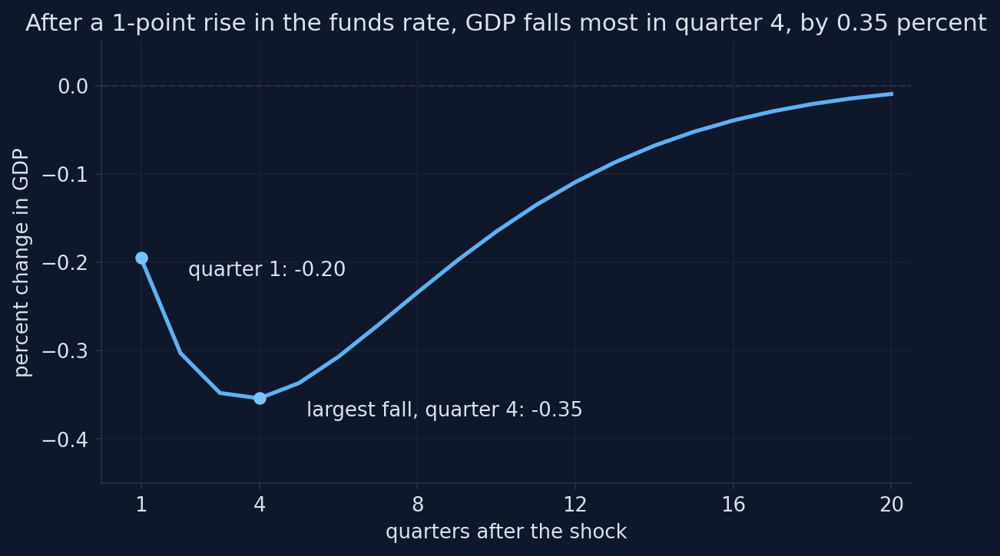
Adapted from Fig. 15.9 in Jones (2024), based on Smets and Wouters (2007); computed with Snowdrop’s model file and the published estimates. Appendix H, Section H.6.
The model reproduces the textbook’s three numbers
Jones (2024)
This model
GDP in quarter 1 (%)
about −0.2
−0.20
largest fall (%)
about −0.33
−0.35
quarter of the largest fall
3 to 4
4
after 5 years
mostly gone
−0.01 (quarter 20)
Three sources of the delayed trough: habits slow consumption, adjustment costs slow investment, and smoothing keeps the rate high for several quarters.
Predict the other three: consumption, hours, inflation
Same shock. GDP falls 0.35 percent at the trough.
Does consumption fall more or less than GDP? Hours more or less than GDP? How large is the fall in inflation, and how long does it last?
Consumption falls as much as GDP; hours less; inflation by 0.2 points
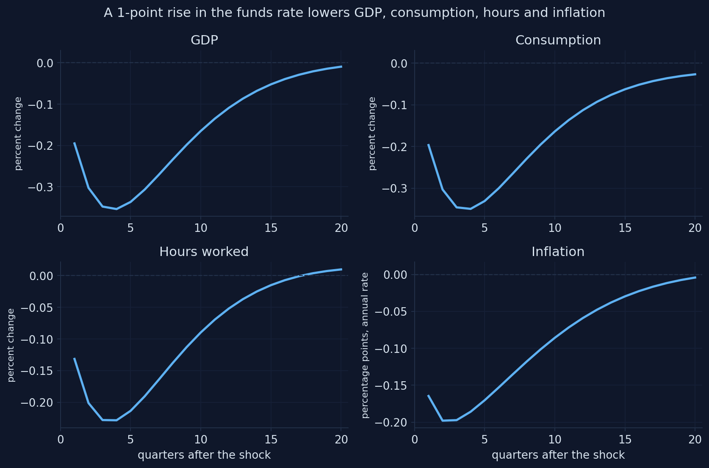
Adapted from Fig. 15.10 in Jones (2024), based on Smets and Wouters (2007); computed with Snowdrop’s model file and the published estimates. Appendix H, Section H.6.
Reading the monetary shock
consumption: −0.35 at the trough, the same as GDP
hours: −0.23: part of the fall in output comes from lower utilization
inflation: −0.20 points, below −0.15 for six quarters (the textbook: about two years)
the funds rate rises by only 0.75 points: the rule offsets part of the shock
Jones explains the large consumption response by adjustment costs. Act IV finds that, in this model, habits matter more.
A more persistent surprise almost doubles the fall in GDP
Raise the persistence of the policy surprise from 0.13 to 0.5: load_sw({"crhoms": 0.5}).
the largest fall in GDP: about −0.65 percent, still in quarter 4
people expect the tightening to last, so long-term real rates rise more
(H.2) and (H.4) look at the whole expected path of rates
This is why central banks care about forward guidance (Ch. 13): the expected path of rates moves spending, not just today’s rate.
What does a 1 percent rise in TFP do to GDP and hours?
TFP rises 1 percent in quarter 1 and fades slowly (\(\rho_a = 0.96\), a half-life of 16.5 quarters).
Does GDP rise by more or less than 1 percent? Do hours rise or fall at first? Does inflation rise or fall?
GDP rises more than TFP, but hours fall at first
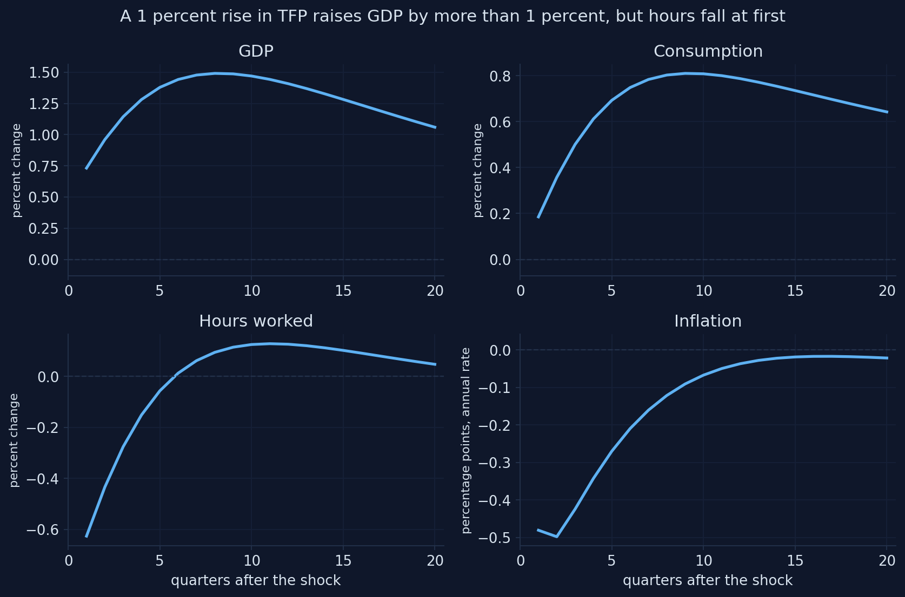
Adapted from Fig. 15.11 in Jones (2024), based on Smets and Wouters (2007); computed with Snowdrop’s model file and the published estimates. Appendix H, Section H.7.
Every pattern of the textbook, with the same sizes
GDP peaks at 1.49 percent in quarter 8: more than the 1 percent rise in TFP, because capital accumulates
consumption rises about half as much (peak 0.81): households smooth it
hours fall by 0.63 percent at first, and turn positive only in quarter 6
The fall in hours is the puzzle of Chapter 15. Act IV asks how much of it is due to sticky prices.
Over ten years, capital keeps GDP up while TFP fades
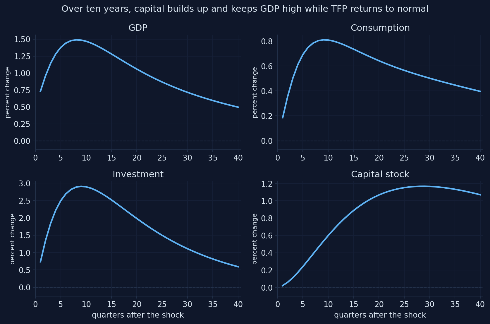
Computed with Snowdrop’s model file and the estimates of Smets and Wouters (2007); related to Chapter 15 of Jones (2024). Appendix H, Section H.7.
A nearly permanent TFP rise still lowers hours at first
Set crhoa = 0.99: the gain in TFP almost never fades.
hours still fall by almost 0.6 percent at first, and stay close to zero for years
households are richer, so they want to consume more and work less (the wealth effect, H.9)
with habits, adjustment costs and sticky prices, demand still rises slowly
consumption now rises much more: the gain in income is more permanent
What does a rise in government purchases do to consumption?
Purchases rise by 1 percent of GDP in quarter 1 and fade very slowly (\(\rho_g = 0.98\)).
Is the multiplier above or below 1? Does consumption rise (more income) or fall? Do hours rise or fall?
Purchases raise GDP and hours, and crowd out consumption
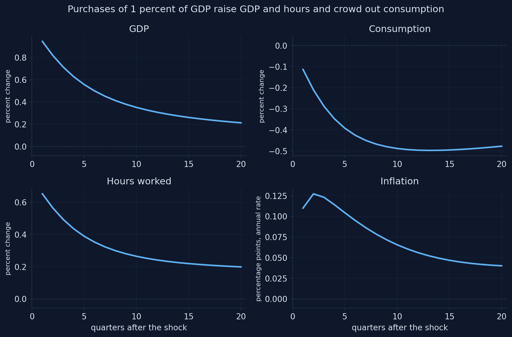
Adapted from Fig. 15.12 in Jones (2024), based on Smets and Wouters (2007); computed with Snowdrop’s model file and the published estimates. Appendix H, Section H.8.
The multiplier is 0.94 on impact, and falls as consumption is crowded out
Multiplier over 1 quarters: 0.94
Multiplier over 4 quarters: 0.80
Multiplier over 8 quarters: 0.68
Multiplier over 20 quarters: 0.52
close to the textbook’s “around 1” in the short run
cumulative multipliers add up GDP and purchases over several quarters
consumption falls: future taxes make households poorer (Ch. 15)
hours rise: poorer households work more
“More government purchases mean more consumption”
“Government purchases raise consumption, so the multiplier must be above 1.”
Here consumption falls (to −0.50 percent): the wealth effect of future taxes crowds it out, and the multiplier stays below 1.
Short-lived spending crowds out less
Make the spending rise short-lived: crhog = 0.5 instead of 0.98.
a short rise costs little in lifetime taxes, so the wealth effect is small
consumption no longer falls: it even rises a little with the extra income from work
the impact multiplier rises to about 1.1
What matters for consumption is lifetime wealth (Ch. 16): persistent spending crowds out more.
What does a rise in the risk premium do?
Households now borrow and save at a rate above the funds rate: the financial friction of the textbook’s last Smets–Wouters chart. The wedge dies out fast (\(\rho_b = 0.18\)).
Which variable falls most: GDP, consumption, hours or inflation? Compared with a monetary tightening, are the effects larger at once or later?
A higher risk premium lowers consumption most
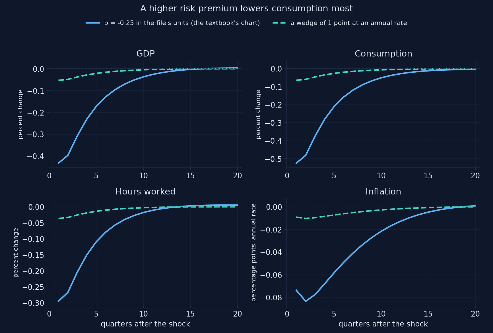
Adapted from Fig. 15.13 in Jones (2024), based on Smets and Wouters (2007); computed with Snowdrop’s model file and the published estimates. Appendix H, Section H.9.
Units matter: the textbook’s chart is a wedge of 8 points a year, not 1
Jones (2024), read off the chart
\(b = -0.25\) (solid)
1-point wedge (dashed)
GDP (%)
−0.47
−0.43
−0.05
consumption (%)
−0.55
−0.52
−0.06
hours (%)
−0.31
−0.29
−0.04
inflation (points)
−0.12
−0.07
−0.01
\(b = -0.25\) is a wedge of \(0.25/c_3 = 2.05\) points per quarter, 8.2 at an annual rate. The shape matches; the caption’s “1 point” does not.
A persistent wedge turns a small premium into a recession
Give the 1-point wedge again, but let it last: crhob = 0.7 instead of 0.18.
GDP now falls by about 0.19 percent, with a trough in quarter 3
almost four times more than with the estimated persistence
about half the effect of a monetary surprise of the same size
Financial crises are not short-lived: the reason models built after 2008 (Ch. 14) put financial frictions at their center.
The same direction as a monetary shock, a different timing
Risk premium
hits consumption directly
dies out fast (\(\rho_b = 0.18\))
effects largest at once
Monetary policy
works through a smoothed policy rate
the rate stays high for a year
effects build up to a trough in quarter 4
Both raise the rate households face, so both lower consumption, GDP, hours and inflation.
A shock the textbook does not show: investment becomes more efficient
An investment-specific shock: each unit of investment goods turns into more capital (a typical, 1 s.d. surprise).
Does it look like a supply shock (output up, inflation down) or a demand shock (output up, inflation up)? What happens to consumption at first?
More efficient investment raises investment and GDP
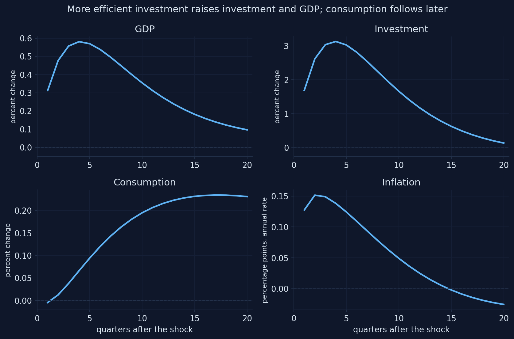
Computed with Snowdrop’s model file and the estimates of Smets and Wouters (2007); a typical (1 s.d.) shock; related to Chapter 15 of Jones (2024). Appendix H, Section H.10.
Seven shocks, one menu: compare their shapes
Computed for this deck with the notebook’s model file, the estimates of Smets and Wouters (2007) and its functions load_sw and irf (20 quarters; the book’s units). Appendix H.
Demand-like and supply-like shocks, from the first quarter
Shock
GDP, quarter 1
Inflation, quarter 1
Type
monetary tightening
−0.20
−0.16
demand
government purchases
+0.94
+0.11
demand
risk premium (the textbook’s chart)
−0.43
−0.07
demand
investment-specific (1 s.d.)
+0.31
+0.13
demand
TFP
+0.73
−0.48
supply
price markup (1 s.d.)
−0.11
+0.97
supply
wage markup (1 s.d.)
−0.04
+0.51
supply
Demand shocks move output and inflation together; supply shocks move them apart and force the central bank to choose.
Act III in one table: Chapter 15’s charts, recomputed
Shock (textbook size)
Model shock
Key numbers
Jones (2024)
Funds rate +1 point
\(\eta^r = 0.25\)
GDP −0.20 → −0.35 (q4); inflation −0.20
−0.2 → −0.33 (q3–4)
TFP +1 percent
\(\eta^a = 1\)
GDP peak 1.49 (q8); hours −0.63 at first
GDP peak above 1; hours fall
Purchases +1 percent
\(\eta^g = 1\) (of GDP)
multiplier 0.94; consumption to −0.50
multiplier around 1
Financial friction
\(b = -0.25\)
consumption −0.52, GDP −0.43
−0.55, −0.47
Investment-specific
1 s.d.
investment +3, GDP +0.6
not shown
Which frictions matter?
Act IV
An experiment: change one parameter, solve again, compare
def experiment(parameter, values, shock, size):"""Impulse responses to one shock for several values of one parameter.""" runs = []for j, value inenumerate(values): model = load_sw({parameter: value}, file="sw_experiment.yaml") label =f"{parameter} = {value}" runs.append((label, irf(model, shock, size)))return runsruns = experiment("cprobp", [0.6563, 0.5, 0.3, 0.1], "ea", 1.0)
Chapter 15 explained each pattern with one friction. In a model with all frictions at once, we can test those explanations.
If prices were less sticky, would hours still fall after a TFP shock?
The Calvo parameter \(\xi_p\) falls from its estimate, 0.66 (a price lasts about 3 quarters), to 0.1 (prices reset almost every quarter).
Chapter 15 blames the fall in hours on sticky prices. With \(\xi_p = 0.1\), do hours rise at once, fall less, or fall as much?
Less sticky prices raise GDP faster, but hours still fall at first
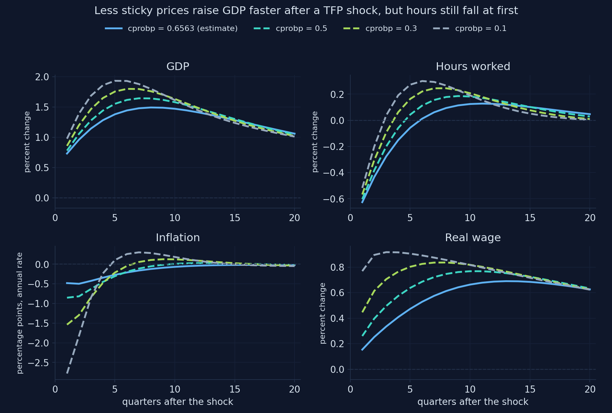
Computed with Snowdrop’s model file and the estimates of Smets and Wouters (2007); related to Fig. 10 of Chapter 15. Appendix H, Section H.11.
Hours fall even in the model’s flexible economy
Largest GDP
Hours in quarter 1
\(\xi_p = 0.66\) (estimate)
1.49
−0.63
\(\xi_p = 0.5\)
1.64
−0.60
\(\xi_p = 0.3\)
1.80
−0.57
\(\xi_p = 0.1\)
1.93
−0.52
flexible prices and wages
1.59
−0.43
Sticky prices make the fall in hours larger, but they are not its only cause.
Move the Calvo parameter yourself
Computed for this deck with the notebook’s model file, the estimates of Smets and Wouters (2007) and its functions load_sw and irf (a TFP shock of 1 percent; dotted: the model’s flexible economy). Appendix H.
Hours stop falling only when the real frictions are weak too
Largest GDP
Hours, quarter 1
Hours, quarter 2
estimated model
1.49
−0.63
−0.43
flexible prices and wages
1.65
−0.54
−0.27
… and weak habits and adjustment costs
1.83
−0.15
+0.07
The textbook’s simple labor market, with no habits and no adjustment costs, is close to the last row.
One friction at a time: none removes the fall in hours on its own
Change (TFP shock)
Hours in quarter 1
estimated model
−0.63
weak habits only (\(h = 0.1\))
about −0.3: the most
flexible prices only (\(\xi_p = 0.1\))
−0.52
low adjustment costs only (\(\varphi = 2\))
almost unchanged
all of them weak
−0.15, positive from quarter 2
The frictions reinforce each other: demand rises slowly when any of them is strong.
Sticky prices are not the whole story behind the fall in hours
“Hours fall after a TFP shock because prices are sticky; with flexible prices they would rise.”
In the estimated model, hours fall with flexible prices and wages too (−0.43). Habits and adjustment costs slow demand, and the wealth effect lowers labor supply.
If wages were less sticky, what would a tightening do to the real wage?
The Calvo wage parameter \(\xi_w\) falls from 0.74 to 0.5 and 0.3. The shock is a monetary tightening.
Does the real wage fall more or less? Do GDP and hours fall more or less?
Flexible wages: inflation and the real wage fall more
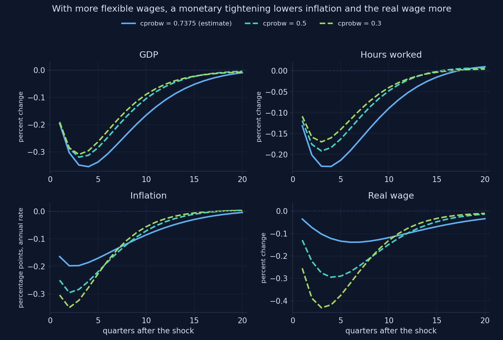
Computed with Snowdrop’s model file and the estimates of Smets and Wouters (2007); related to Figs. 6 and 7 of Chapter 15. Appendix H, Section H.11.
With prices sticky too, the real wage falls with employment here, unlike Chapter 15’s sticky-wage-only case: both nominal frictions together decide its sign.
Which friction drives the fall in consumption after a tightening?
Jones (2024) points to investment adjustment costs. We lower the adjustment cost \(\varphi\) from 5.49 to 2, and the habit \(h\) from 0.71 to 0.1, one at a time.
Which change moves the consumption response more: weaker adjustment costs or weaker habits? Which moves investment more?
Weaker habits make consumption fall more, and sooner
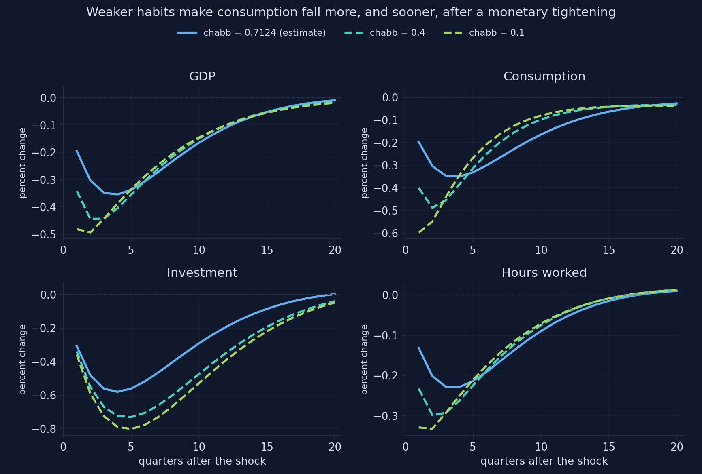
Computed with Snowdrop’s model file and the estimates of Smets and Wouters (2007); related to Chapter 15 of Jones (2024). Appendix H, Section H.11.
Move the habit parameter
Computed for this deck with the notebook’s model file, the estimates of Smets and Wouters (2007) and its functions load_sw and irf (a monetary shock of 1 point at an annual rate). Appendix H.
Move the adjustment cost
Computed for this deck with the notebook’s model file, the estimates of Smets and Wouters (2007) and its functions load_sw and irf (a monetary shock of 1 point at an annual rate). Appendix H.
Consumption falls about as much as GDP because GDP falls less: investment is held back by its costs, and utilization absorbs part of the shock.
Why does a short-lived policy surprise move GDP for two years?
The monetary surprise dies out in a quarter (\(\rho_r = 0.13\)), yet GDP is lowest after a year. The Taylor rule smooths the rate with \(\rho = 0.82\).
Without smoothing (\(\rho = 0\)), how large would the fall in GDP be: about the same, half, or much smaller?
Without smoothing, a policy surprise is over in a quarter
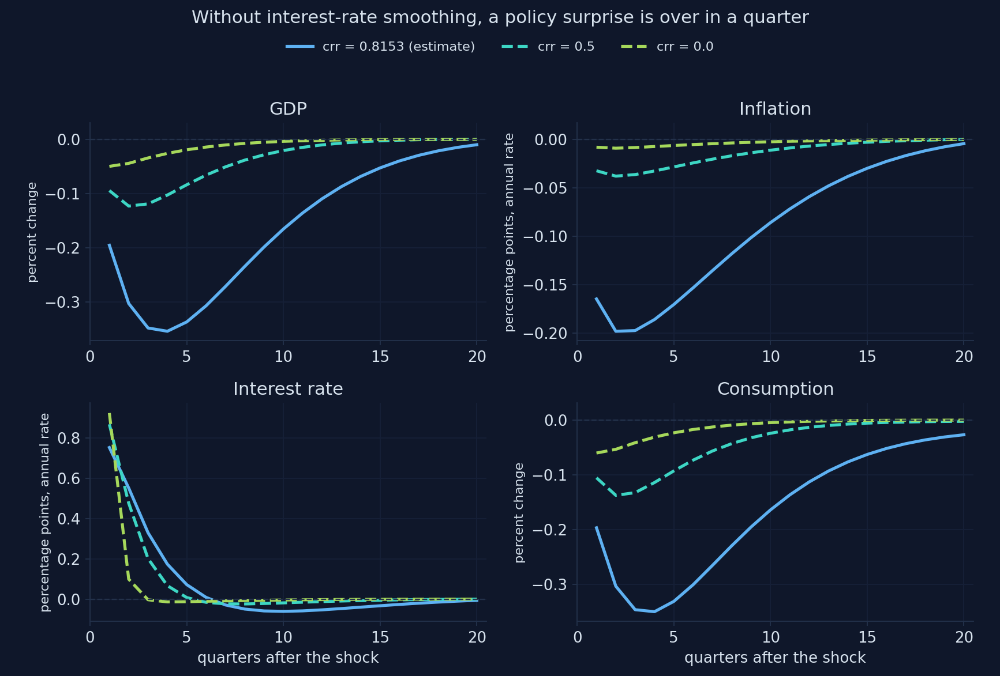
Computed with Snowdrop’s model file and the estimates of Smets and Wouters (2007); related to Chapters 12 and 13 of Jones (2024). Appendix H, Section H.11.
Move the smoothing parameter
Computed for this deck with the notebook’s model file, the estimates of Smets and Wouters (2007) and its functions load_sw and irf (a monetary shock of 1 point at an annual rate). Appendix H.
Smoothing carries the policy surprise; a stronger inflation response dampens it
Largest fall in GDP
Largest fall in inflation
estimate (\(\rho = 0.82\), \(r_\pi = 2.03\))
−0.35
−0.20
\(\rho = 0.5\)
−0.12
−0.04
\(\rho = 0\)
−0.05
−0.01
\(r_\pi = 1.5\)
−0.41
−0.26
\(r_\pi = 3\)
−0.30
−0.14
It is the expected path of rates, not one quarter’s rate, that moves consumption and investment.
What does a rise in firms’ markups do?
A typical price markup surprise, and a typical wage markup surprise (1 s.d. each). The central bank follows its Taylor rule.
What happens to inflation and to GDP? Which of the two shocks lasts longer, given \(\rho_p = 0.90\) with a large moving-average term and \(\rho_w = 0.97\)?
Computed with Snowdrop’s model file and the estimates of Smets and Wouters (2007); typical (1 s.d.) shocks; related to Chapter 13 of Jones (2024). Appendix H, Section H.10.
Two supply shocks with different lives
Price markup
inflation up about 1 point at once
back to normal within two years
the real wage falls: prices rise faster than wages
Wage markup
raises the real wage
lasts much longer (\(\rho_w = 0.97\))
lowers GDP and hours for years
In Smets and Wouters’ variance decompositions, markup shocks explain most movements of inflation, and the wage markup a large part of output at long horizons.
Fighting a markup shock: a stronger response lowers inflation and costs output
The central bank chooses how hard to fight the inflation of a price markup shock: crpi = 1.5 or 3.
a stronger response lowers inflation a little
and costs more output
with a supply shock, the central bank cannot stabilize both
The trade-off of Chapter 13’s Phillips curve, inside an estimated model.
The file’s own numbers make a monetary shock almost twice as strong
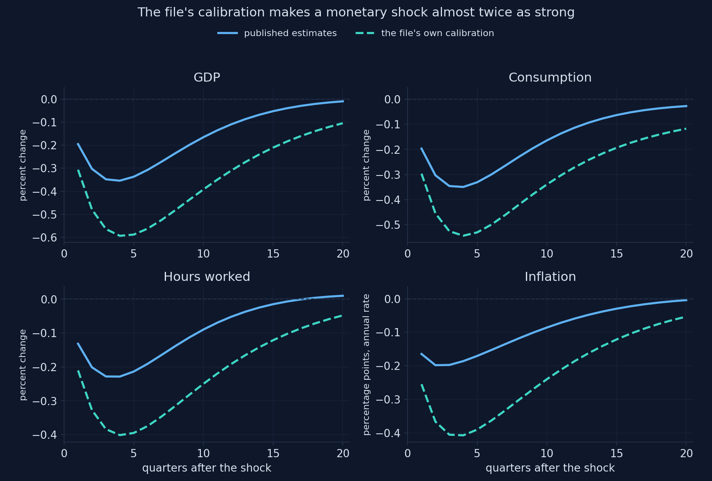
Computed with Snowdrop’s model file, its own calibration and the estimates of Smets and Wouters (2007); related to Chapter 15 of Jones (2024). Appendix H, Section H.12.
The corrected equation barely matters; the numbers matter a lot
GDP after monetary
Inflation after monetary
Investment after investment shock
estimates, corrected (H.6)
−0.354
−0.198
3.129
estimates, as published
−0.354
−0.198
3.169
file’s calibration, corrected
−0.593
−0.407
3.391
A file with the right equations and the wrong numbers gives confident, wrong answers. Compare its numbers with the source it claims to follow.
The frictions work together
Hours after TFP
fall with sticky prices, fall less with flexible prices, stop falling only when habits and adjustment costs are weak too
Consumption after a tightening
shaped by habits; adjustment costs move investment instead
The size of a policy surprise
carried by smoothing: without it, GDP falls 0.05, not 0.35
Supply shocks
markups raise inflation and lower output; the rule trades one off against the other
No single friction explains the patterns of Chapter 15.
Act IV in one table: the experiments
Experiment
Change
Result
Sticky prices, TFP shock
\(\xi_p\): 0.66 → 0.1
hours −0.63 → −0.52; flexible economy −0.43
All frictions weak, TFP
+ \(h = 0.1\), \(\varphi = 2\)
hours −0.15 at first, positive from quarter 2
Sticky wages, monetary
\(\xi_w\): 0.74 → 0.3
real wage −0.14 → −0.43; inflation −0.20 → −0.35
Habits, monetary
\(h\): 0.71 → 0.1
consumption −0.35 → −0.60, at once
Adjustment costs, monetary
\(\varphi\): 5.49 → 2
investment −0.58 → −1.08; consumption unchanged
Smoothing, monetary
\(\rho\): 0.82 → 0
GDP −0.35 → −0.05
File’s calibration, monetary
all 29 values
GDP −0.35 → −0.59
“With seven shocks and dozens of frictions, the model can fit anything”
A skeptic says: “Smets and Wouters let the data choose seven shocks and many frictions. Of course the model fits. But some ‘shocks’, like the wage markup shock that drives output at long horizons, have no clear meaning, so the model’s stories about causes cannot be trusted for policy.”
Reply: the criticism is serious and contested. Chari, Kehoe and McGrattan (2009) argue that several shocks are not structural, so policy conclusions are fragile. Del Negro, Schorfheide, Smets and Wouters (2007) test the model against less restricted versions and find its fit good but not perfect, with clear signs of misspecification. Defenders reply that each friction is disciplined by evidence (Christiano, Eichenbaum and Trabandt, 2018). What this deck practiced (switching frictions off and watching what changes) is how you find out which conclusions depend on which assumptions.
Common errors, and how to fix them
What you see
Why
What to do
could not convert string to float: 'inv_gamma_pdf'
the estimation block’s layout
remove the block, as write_sw does
a plausible chart, residual 0.02
Klein fails on this model
Solver="AndersonMoore"; check residuals
“unable to find solution”
Villemot fails on this model
Anderson–Moore or Binder–Pesaran
a parameter change has no effect
derived values computed at import
write the file again: load_sw({...})
risk premium: wrong sign or size
the file’s b is \(-c_3\varepsilon^b\)
a rise of \(x\) points is b\(= -c_3 x\)
responses 4 times off
rates are quarterly in the model
× 4 for annual rates, as irf does
a crash after setting a Calvo parameter to 0 or 1
\(\xi\) is in a denominator
values strictly between 0 and 1
Go further: estimate it, derive it, and see where it is used
Estimate
the steps of Appendix G.11–G.12: seven series, measurement equations, priors, estimate
the data: the replication files, or FRED (Appendix B)
36 parameters and a flat likelihood in some directions: a long run
Derive and use
the derivations: Smets and Wouters (2007) and its online appendix; Galí (2015); Del Negro and Schorfheide (2012)
why each friction: Christiano, Eichenbaum and Evans (2005)
a euro-area version (Smets and Wouters, 2003); the New York Fed’s model (Del Negro et al., 2013)
What to remember from this appendix
I. The Smets–Wouters model is 14 log-linear equations in 5 blocks; each one extends a Chapter 15 idea, and the model file differs from the paper in its numbers, one equation and one shock’s units
II. Snowdrop solves it in a fraction of a second, but only checking the residuals showed that one solver was wrong; rates are quarterly, so units need care
III. With the published estimates, the model reproduces the textbook’s monetary, TFP and purchases charts almost number for number, and the financial-friction chart once its units are understood
IV. The frictions work together: hours fall after TFP even with flexible prices; habits shape consumption, adjustment costs investment; smoothing carries policy surprises
The model joins Chapter 15’s pieces and reproduces its charts, once the solver, the file and the units are checked; no single friction explains the patterns
Open the Appendix H notebook in Colab and run every experiment yourself
Sources: figures, model and software
Recomputed textbook charts (monetary policy: GDP and four panels; TFP; government purchases; financial friction). Adapted from Figs. 15.9–15.13 in Jones (2024), based on Smets and Wouters (2007); computed with Snowdrop’s model file and the published estimates; Appendix H, Sections H.6–H.9.
Other charts (TFP over ten years; investment-specific and markup shocks; the four friction experiments; the file’s calibration). Our computations in Appendix H, Sections H.7 and H.10–H.12.
Live charts (five). Built for this deck with the notebook’s functions load_sw and irf; they reproduce the notebook’s printed numbers.
Parameters. The posterior mode of Smets and Wouters (2007, Table 1), from the mode file of Pfeifer’s replication (github.com/JohannesPfeifer/DSGE_mod).
Model file.supplements/models/COVID19/sw_model.yaml in Snowdrop, with the equation-(8) factor restored (Del Negro and Schorfheide, 2012).
Chari, V. V., Kehoe, P. J., and McGrattan, E. R. (2009). New Keynesian models: not yet useful for policy analysis. American Economic Journal: Macroeconomics 1(1), 242–266.
Christiano, L. J., Eichenbaum, M., and Evans, C. L. (2005). Nominal rigidities and the dynamic effects of a shock to monetary policy. Journal of Political Economy 113(1), 1–45.
Christiano, L. J., Eichenbaum, M. S., and Trabandt, M. (2018). On DSGE models. Journal of Economic Perspectives 32(3), 113–140.
Del Negro, M., and Schorfheide, F. (2012). Notes on New-Keynesian models. Unpublished notes, cited in the header of the model file.
Del Negro, M., Schorfheide, F., Smets, F., and Wouters, R. (2007). On the fit of New Keynesian models. Journal of Business and Economic Statistics 25(2), 123–143.
Del Negro, M., et al. (2013). The FRBNY DSGE model. Federal Reserve Bank of New York Staff Report 647.
Galí, J. (2015). Monetary Policy, Inflation, and the Business Cycle, 2nd ed. Princeton University Press.
Goumilevski, A., and Otterson, J. (2025). Snowdrop: Python package for DSGE modeling. Journal of Open Source Software 10(112), 8197. doi:10.21105/joss.08197
Smets, F., and Wouters, R. (2003). An estimated dynamic stochastic general equilibrium model of the euro area. Journal of the European Economic Association 1(5), 1123–1175.
Smets, F., and Wouters, R. (2007). Shocks and frictions in US business cycles: a Bayesian DSGE approach. American Economic Review 97(3), 586–606. doi:10.1257/aer.97.3.586
Textbook. Jones, C. I. (2024). Macroeconomics, 6th ed. W. W. Norton (Chapter 15, and Chapters 5, 11–13, 16–17 for the pieces).